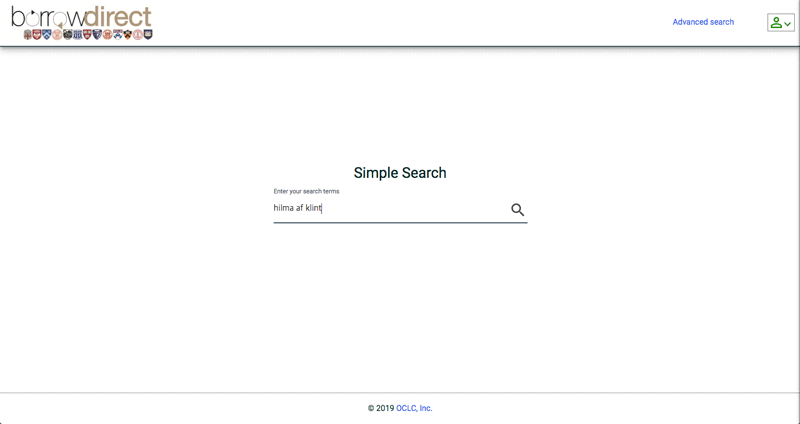
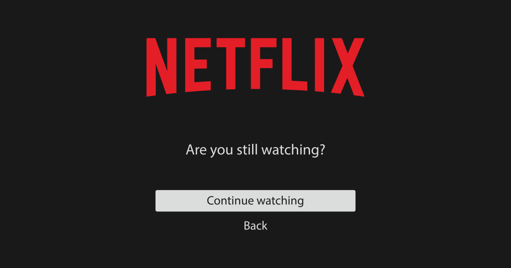

Teleporting Step 1.
Measure your constituent atoms.
📍
This is the first step of teleportation. As tepleportation is sending information of my atoms, I have to measure my physical body info. When I fill sign-up sheet in a new website, there is
📍some personal questions and answers.🖼️
It exists incase I forget your password in the future, the answers identify it’s real "me",
not hackers or aliens. I found this would be the similar step with teleportation to confirm real me. Sometimes my memory is just rusty though...The influx of different messages that we receive every time we are online does not overload our working memory alone. This makes it difficult for the frontal lobe to focus on only one object. The process of strengthening memory cannot begin at all. And thanks to the plasticity of neural channels, the more we use the Internet, the more our brains are trained to become more distracted, which processes information very quickly and efficiently, but it is impossible to concentrate continuously. This helps us understand why many of us find it hard to focus on one thing even when we're away from the computer.
Teleporting Step 2:
Set the destination point.
📍
I know that personality changes a little bit depends on which language I use. But how do I feel about "emoji"? Does "emoji" also change my ego like other language? Honestly, I've considered emoji as spices of my texting so far. But I now admit that emoji has taken a huge part of communication. It's simple, straight-forward and powerful... I recently read a emoji poem by Stephanie Berger🔗.
🐱🍴🐦
💀🇫🇷🎶, 💘, 🍴🍴!
🐦💜💦💨💨💨💨.
🌻🎥💡🌹.
🐱💜🍴🐦, 🐦
🙌🏻👯♀️👈🏻🙏🏻.
💅🏻💅🏻💅🏻💅🏻💋👼🏻💋,
🐦. 🎯🎯🎯! 🚬🚶🏻♂️.
☝🏻🕑, 👶🏻. ✋🏻❤️❤️.
👄🎁💡,
👎🏻🔥🔥🔥.
💦☕️.
🌺🌺🌺💀,
🎁🚬💣🔫. 🛀🏻🛀🏻🛀🏻.
🎱😍🏈, 💺💺📩.
🏊🏻♂️🎯. 🚶🎯, 💃🏻🎯; ☝🏻
💀🇫🇷🎶, 💘, 🍴🍴!
🐦💜💦💨💨💨💨.
🌻🎥💡🌹.
🐱💜🍴🐦, 🐦
🙌🏻👯♀️👈🏻🙏🏻.
💅🏻💅🏻💅🏻💅🏻💋👼🏻💋,
🐦. 🎯🎯🎯! 🚬🚶🏻♂️.
☝🏻🕑, 👶🏻. ✋🏻❤️❤️.
👄🎁💡,
👎🏻🔥🔥🔥.
💦☕️.
🌺🌺🌺💀,
🎁🚬💣🔫. 🛀🏻🛀🏻🛀🏻.
🎱😍🏈, 💺💺📩.
🏊🏻♂️🎯. 🚶🎯, 💃🏻🎯; ☝🏻
A emoji poem is such a mistery... It's odd and confusing in a good way. Repeating same emojis like 💨💨💨💨, 💅🏻💅🏻💅🏻💅🏻 are so curious, which I couldn't decode them. Another concern about emoji is that it has different looking by systems like Apple, Google, and Samsung.
So it will be different between when I read the poem with iphone and Microsoft computer. Could it be bugging me to understand the poem? Or it's just poet's intention.... Anyhow, there is english version of the poem as well, it's fun to compare two language and tone. They make each others existing having their own egos... Drag below to read. (Teleport to read other Emoji Poetry🔗)
A kitty devourse the grey bird
Those dead French songs, my heart, in the café!
If I love the grey bird, she cries and blows me
away. Pixelate the flowers to hold you, screw
you in. If he pussy loves, she devours
the grey bird, the grey bird again.
Picture it. Two women, at whom
the palmes and primary palettes gawk.
Their petunia'd nail beds, rough as the lips
of angels, dovve. My god, you have
struck it! A young man runs into the fire.
He asks for a minute, a child. He stops
and waits for love. The lip of the gift
burns slow, and then down, and
he carries the fire out.
When you cred into your coffee.
When the begonias died,
the gift burns slow and hot and has been
shot. You might find me in the bath.
Check the future real quick
with hearts in your eyes and balls,
take a flight in your chair like the sound
of a messae sent. Swim and strike.
Run into it and strike. Tango
and strike it; this time you will wait.
Those dead French songs, my heart, in the café!
If I love the grey bird, she cries and blows me
away. Pixelate the flowers to hold you, screw
you in. If he pussy loves, she devours
the grey bird, the grey bird again.
Picture it. Two women, at whom
the palmes and primary palettes gawk.
Their petunia'd nail beds, rough as the lips
of angels, dovve. My god, you have
struck it! A young man runs into the fire.
He asks for a minute, a child. He stops
and waits for love. The lip of the gift
burns slow, and then down, and
he carries the fire out.
When you cred into your coffee.
When the begonias died,
the gift burns slow and hot and has been
shot. You might find me in the bath.
Check the future real quick
with hearts in your eyes and balls,
take a flight in your chair like the sound
of a messae sent. Swim and strike.
Run into it and strike. Tango
and strike it; this time you will wait.
Teleporting Step 3:
Dissociate yourself & make a map of dissociated atoms.
📍
"There are two kinds of knowledge. One is what I know the knowledge directly, and the other is that I know where the information is." Samuel Johnson, 1775
I get accessed to the Internet to an unprecedented library of information in terms of its size and scope. The Internet allows us to conveniently sort through this library so that we can find something that is not exactly what we are looking for but at least meets our immediate purpose. What the Internet is shrinking is the first kind of knowledge Johnson has said. The ability to know ourselves deeply, the ability to build a rich and unusual series of associations that allow original knowledge to rise within our thoughts. Perhaps Samuel Johnson is right. But Johnson's second knowledge may be developing more because of the Internet. I have benefited a lot since last year thanks to the search function of Yale Digital Library and the library link system.
I get accessed to the Internet to an unprecedented library of information in terms of its size and scope. The Internet allows us to conveniently sort through this library so that we can find something that is not exactly what we are looking for but at least meets our immediate purpose. What the Internet is shrinking is the first kind of knowledge Johnson has said. The ability to know ourselves deeply, the ability to build a rich and unusual series of associations that allow original knowledge to rise within our thoughts. Perhaps Samuel Johnson is right. But Johnson's second knowledge may be developing more because of the Internet. I have benefited a lot since last year thanks to the search function of Yale Digital Library and the library link system.
"Borrow Direct"🖼️
is a feature that allows users to check whether or not they have any material in the Yale Library and receive it by courier service from other linked universities in the United States. Even if I don't get the data I want right away, it's very useful to know where the data is now. Sounds like a function that fits Johnson's earlier statement of "right away purpose." Perhaps while the first knowledge is being "reduced," the second knowledge is becoming more and more "expansionary."
📍
How do I map some infos when using the Internet? I sometimes watch at video on YouTube. It's video that I watch to get useful information for me, but when I finish watching the video, I often dont't remember what it's about, or disapear soon... I just thought that my poor concentration. But I was told that watching at video over the Internet makes sympathetic nerves not activated. So, my brain gets numb while watching the lecture. That's because the video only provides information "one-way" and I just hear the sound. After watching the video, I don't map what I saw with direct or indirect actions such as searching for books about the contents. So the contents can't come inside me, just wander around me and go...
Teleporting Step 4:
Send the information to the chosen destination point.
📍
Socrates may have been mistaken about the effects of writing, but he was wise to warn us against taking memory’s treasures for granted. His prophecy of a tool that would “implant forgetfulness” in the mind, providing “a recipe not for memory, but for reminder,” has gained new currency with the coming of the Web. The prediction may turn out to have been merely premature, not wrong. Of all the sacrifices we make when we devote ourselves to the Internet as our universal medium, the greatest is likely to be the wealth of connections within our own minds. It’s true that the Web is itself a network of connections, but the hyperlinks that associate bits of online data are nothing like the synapses in our brain. The Web’s links are just addresses, simple software tags that direct a browser to load another discrete page of information. They have none of the organic richness or sensitivity of our synapses. The brain’s connections, writes Ari Schulman, “don’t merely provide access to a memory; they in many ways constitute memories.” The Webs connections are not our connections—and no matter how many hours we spend searching and surfing, they will never become our connections. When we outsource our memory to a machine, we also outsource a very important part of our intellect and even our identity. William James, in concluding his 1892 lecture on memory, said, “The connections is the thinking.” To which could be added, “The connecting is the self.”
'THE SHALLOWS', Nicholas Carr,
W. W. Norton & Company, Inc, 2010, pp195.
'THE SHALLOWS', Nicholas Carr,
W. W. Norton & Company, Inc, 2010, pp195.
Teleporting Step 5:
Re-associate yourself into your bodily form.
📍
Have you ever had
a Chat Roulette🖼️
? Chat Roulette is a service that randomly selects chat partners when accessing a site that provides chat services. So, it is not used to meet a particular person and talk to them, but rather to relieve boredom while chatting with an unspecified stranger. It seems to be a place where many people speak of themselves differently from real sex, and are likely to behave differently from their actual personalities, because they cannot tell what age or gender they will meet. This happens frequently on SNS such as Twitter as well as random chatting. It has become very difficult to grasp a person's personality based on what he or she posted on Twitter. I have a friend who posts on Facebook very often, and his real personality is very quiet. There are also the opposite. How would a person's personality shown as a chat window on the Internet, "back-stage personality" be different from his real personality, "front-stage personality"? Maybe they're turning themselves into content and "running" online. Are you making a reality show that makes you a star and reflects their real lives? What can we know from them? What do you not know? What should I believe? How should we react?📍
fail_loading_website.png🖼️
Teleportating Step 6:
Complete!
📍
Are you still there?🖼️